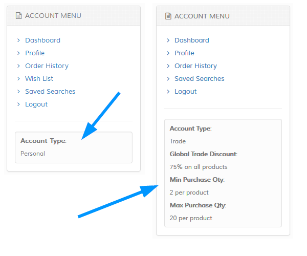
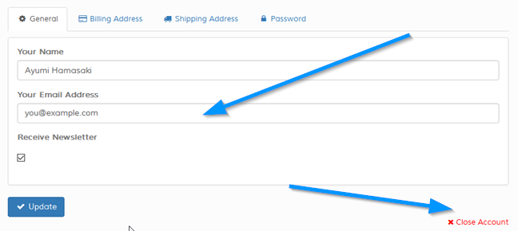
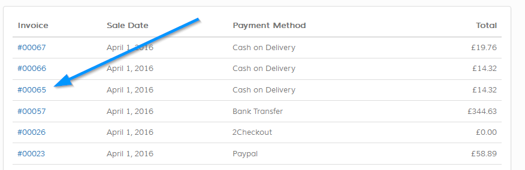
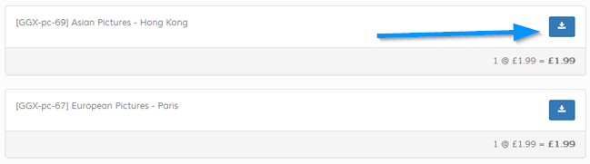
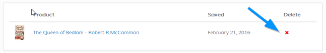
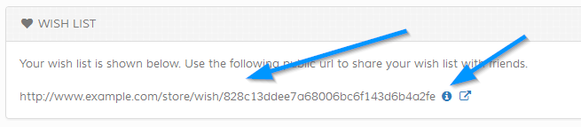
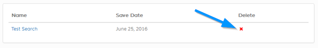

Accounts are divided into two groups, standard accounts which is the general option and trade accounts for trade discounts. For trade accounts,
trade discount, min / max purchases etc can be set. The intial screen on log in is similar except that trade accounts show the trade restrictions in
the left hand menu. Trade accounts also do NOT see the wish list screen as this isn`t an option for trade accounts. See screenshot:

Profile
Enables updating of profile. Visitor also has option to close account via the 'Close Link'.

Order History
Here you can see order history. Click invoice number to view order.

Order View
Overview of order. If enabled, option is available to print order to PDF.
If product downloads exist, an option will be shown to download item.

Wish List
Items appear in your wish list when you click the 'Add to Wishlist' button / link for any product. You can remove products at any time from your
wish list via the icon.

Your unique public url is also shown on this page to share on public forums / websites. Click the icon to show popup
with code tag information.

Saved Searches
If you have saved any searches, they will appear on this screen. Saved searches can be deleted at any time via the icon. Note
that searches may be auto cleared by admin.

Logout
To log out of system, click the 'logout' link in the menu.